プレーを記録
SHOT、TO、GK、退場などを、選手・位置・結果と結び付けて入力します。
ハンドボール試合記録・分析ソフト
ベンチで試合を見ながらプレーを入力。その記録から主要KPIをリアルタイムで確認し、試合後はチーム・選手・GKまで詳しく振り返れるWindowsアプリです。
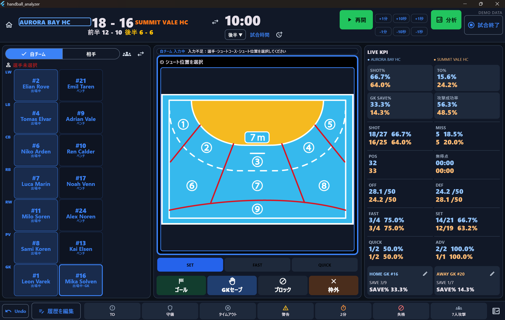
WHAT IT IS
Handball Analyzerは、スコアだけを残すアプリではありません。誰が、どこから、どのような結果になったかを試合中に記録し、同じデータをリアルタイム分析と試合後のレポートに連携します。
SHOT、TO、GK、退場などを、選手・位置・結果と結び付けて入力します。
スコア、SHOT%、TO%、GK SAVE%、攻撃成功率などを試合中に確認できます。
チーム、個人、GK、時間帯、シュート位置・コースをレポートで振り返れます。
PRODUCT IN MOTION
コートを見ながら、手元で選手やシュート位置、プレー結果を入力する様子です。動画を再生すると、試合の流れを止めずに記録する操作感を確認できます。
プレーを追いながら、選手・シュート位置・結果を手元で記録します。
試合中に必要な項目を、一つの画面から選んで入力できます。
入力したプレーは、その場のスコアや主要指標へ反映されます。
01 / RECORD
試合の流れを止めずに入力できるイベント設計。入力ミスはUndoで戻せ、試合終了後も履歴を編集できます。
HOW TO RECORD
自チーム／相手を切り替え、プレーした選手を選択します。
コート図でシュート位置とコースを指定し、SET・FAST・QUICKから攻撃種類を選びます。
ゴール、GKセーブ、ブロック、枠外などの結果を選ぶと記録が反映されます。
直前の入力はUndo、過去の入力は履歴編集から修正できます。
RECORDABLE EVENTS
選手、位置、結果を記録
ターンオーバーを分類
被シュートとセーブ
2分間退場を記録
直前の入力を取り消し
試合終了後も修正可能
02 / ANALYZE
1回の入力を、試合中の判断と試合後の振り返りの両方へ。チーム、選手、GKを同じ記録から多角的に分析します。
スコア、攻撃成功率、SHOT%、TO%、GK SAVE%、前半・後半の変化、時間帯別得点を確認できます。
攻撃成功率、シュート位置・コース、守備、GK、時間帯の流れを自チームと相手で比較。
64.2%GOAL、SHOT、SHOT%、TO、位置・コースを試合をまたいで蓄積し、平均値も確認。
相手のターンオーバーから速攻、シュート、得点までのつながりを確認。
SAVE%、被シュート位置、コース、シュート種類からGKの傾向を確認。
PRODUCT SCREENS
試合中の状況から、チーム・選手の長期的な傾向、共有できるレポートまで、同じ記録を複数の視点で読み解けます。
スコアと主要KPIをまとめて確認し、前半・後半の変化や時間帯別の得点推移を追えます。
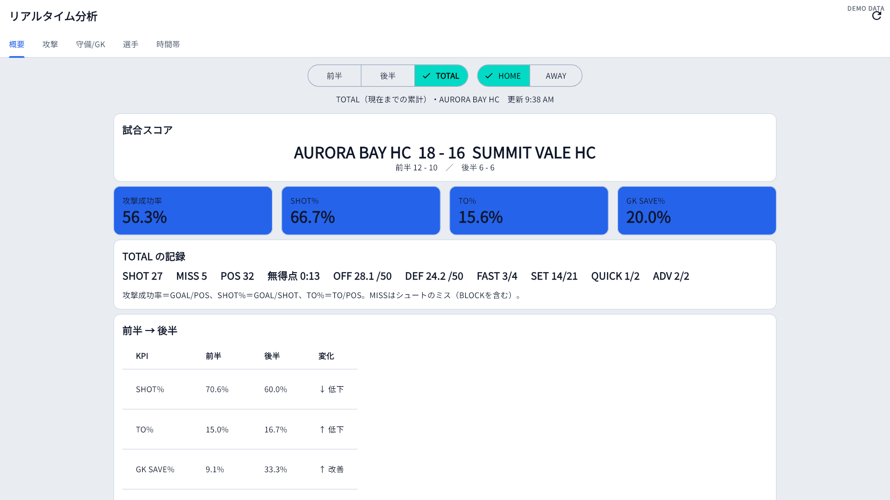
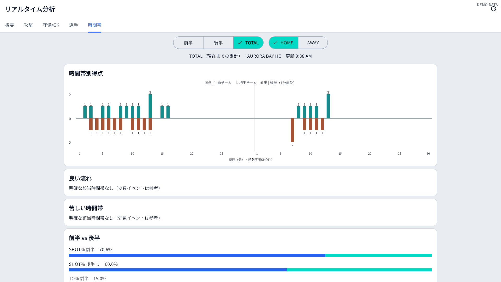
試合概要、シュート位置、守備・GK、診断などをレポートとして整理します。
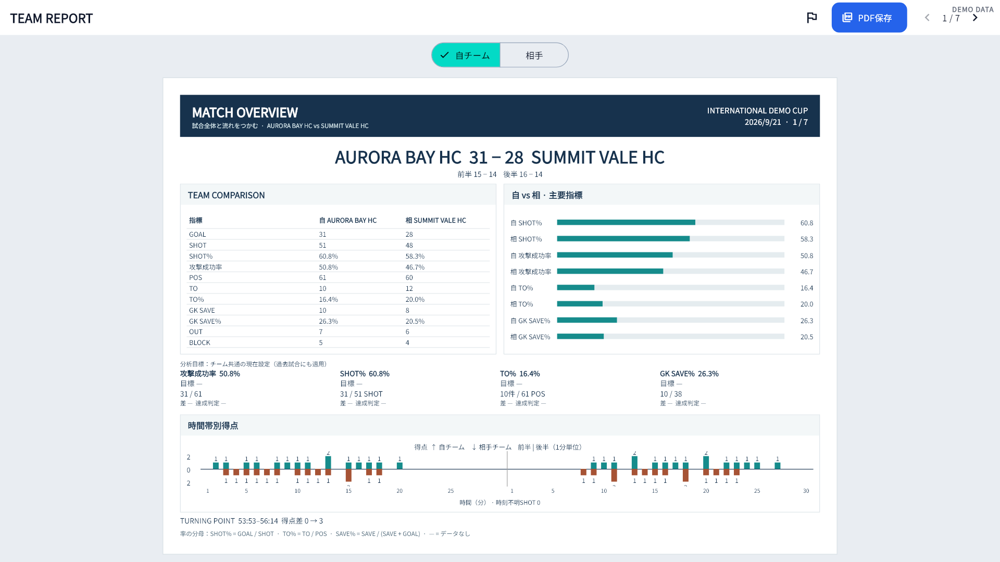
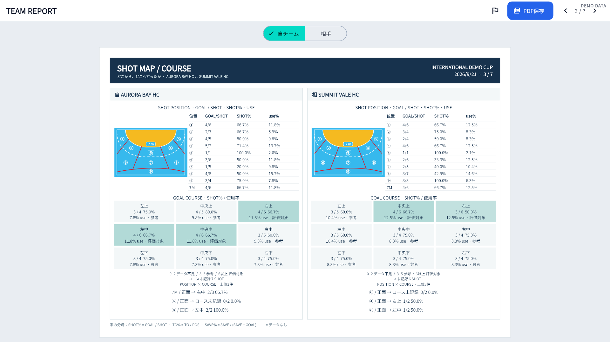
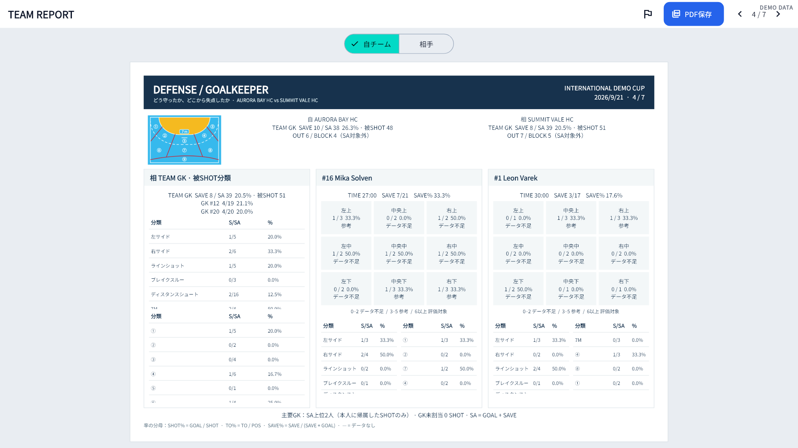
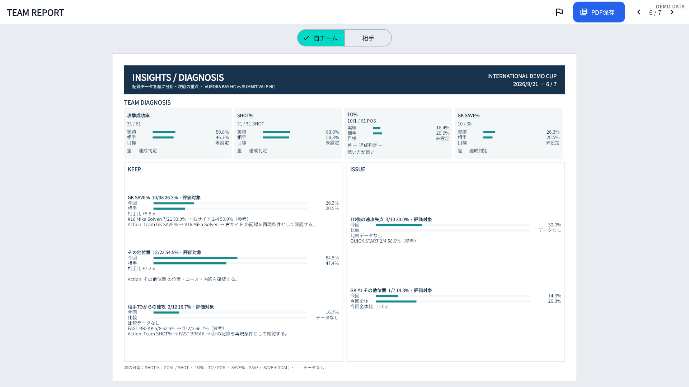
フィールドプレーヤーとGK、それぞれに適した指標とコース分析を表示します。
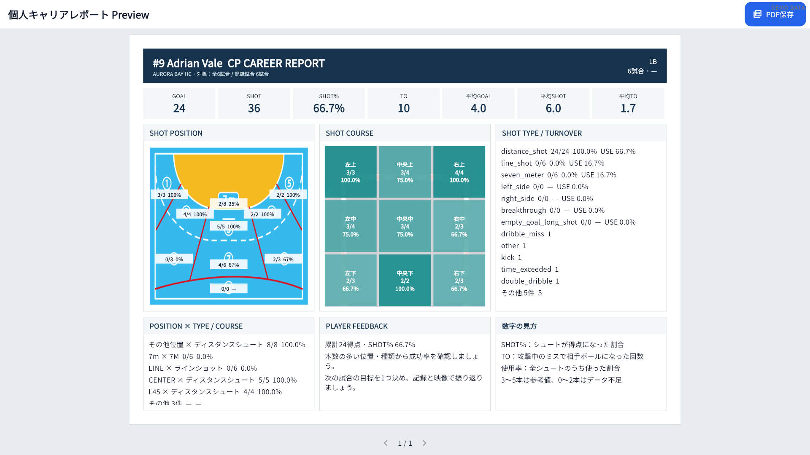
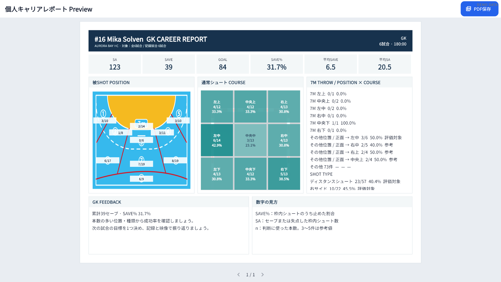
選手記録と試合履歴をA4縦のPDF Previewで確認。PROではPDFファイルとして保存できます。
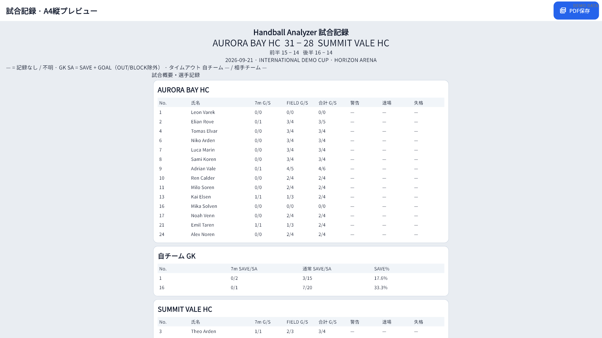
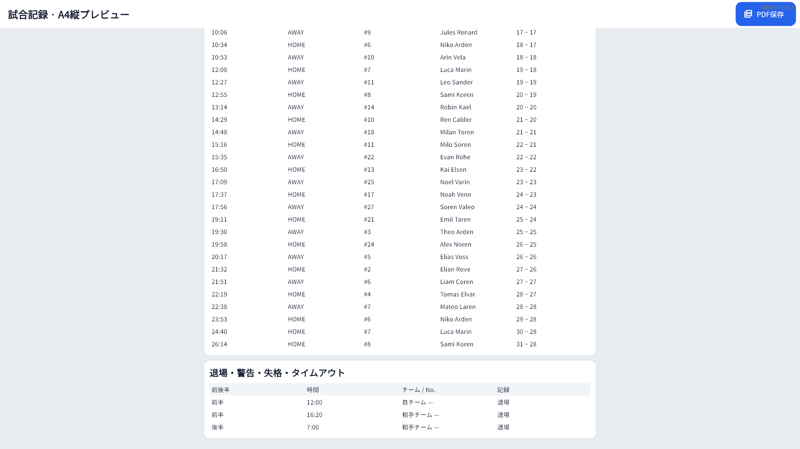
03 / REVIEW
試合記録レポートをPDFで確認。データはBackup / Restoreで引き継げます。
プレーごとのイベントをリアルタイム入力。
試合・チーム・個人の結果を画面で分析。
PROでは試合記録レポートをPDFファイルとして保存。
データのバックアップ作成と復元に対応。
04 / PLANS
FREEでもリアルタイム分析、Team Report、Career Reportを含むすべての分析機能を利用できます。
まず1試合を、すべての機能で。
試合数を気にせず、継続的に分析。
PROはMicrosoft Storeの月額Subscriptionとして販売予定です。現在は販売を開始していません。
05 / YOUR DATA
試合・チーム・選手データは、基本的にユーザーのPC内へ保存する設計です。
HANDBALL ANALYZER